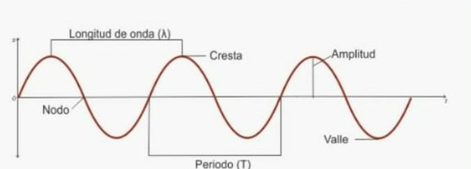

Se conoce como onda a la pertubacion de alguna propiedad fisica como la densidad, presion, campo electrico o campo magnetico esto puede darse tanto en el vacio o en cualquier otro medio.
Las ondas se componen por:
Es el maximo desplazamiento respecto a la posicion de equilibrio.
Tiempo que tarda en efectuarse una onda, vibración u oscilación completa
Es la medida del número de veces que se repite un fenómeno en este caso una onda por unidad de tiempo.
Es la distancia que recorre una onda en un período de tiempo.
Las ondas se pueden clasificar segun:
- Ondas mecánicas: Se propaga energía mecánica. También reciben el nombre de ondas materiales ya que necesitan un medio material elástico de propagación. Ejemplos son el sonido o la onda propagada por el estanque que vimos anteriormente
- Ondas electromagnéticas: Se propaga energía electromagnética producida por oscilaciones de campos eléctricos y magnéticos. No necesitan de medio material de propagación. Como ejemplo podemos señalar la luz, cuyo medio de propagación más favorable es el vacío
- Ondas longitudinales: Son aquellas en las que la dirección de vibración coincide con la dirección de propagación. Se puede entender como una sucesión de contracciones y dilataciones.
- Ondas transversales: Son aquellas en las que la dirección de propagación y vibración son perpendiculares entre sí. Se puede entender como una sucesión de crestas (máximos) y valles (mínimos). La onda propagada en el estanque de nuestro ejemplo, la propagada en una cuerda o la propagada en el segundo muelle de la figura inferior son ejemplos de ondas transversales
- Ondas unidimensionales por ejemplo, la onda que se propaga en una cuerda
- Ondas bidimensionales por ejemplo, las ondas que se propagan en la superficie del agua de un estanque
- Ondas tridimensionales por ejemplo, la luz o el sonido
Presentado por:
- Miguel Guerrero
- Yanvier Tamara
Ing. de sistemas
Fisica III